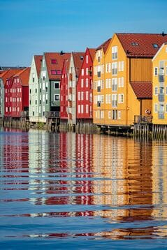
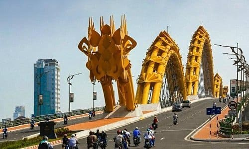
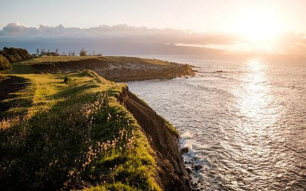
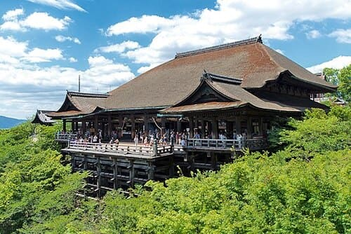
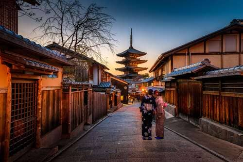
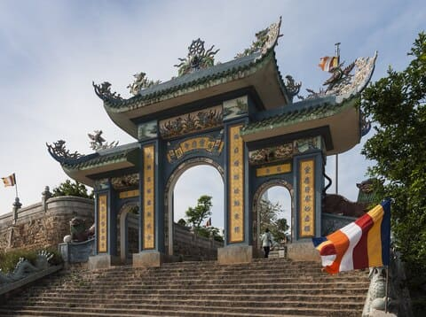

A high-performance Alienware desktop computer

A picturesque city in Europe with historic charmAn awe-inspiring bridge in Da Nang, Vietnam

The famous Dragon Bridge in Da Nang, Vietnam

A breathtaking coastal spot in Davenport, Santa CruzA serene forest landscape in Germany

The iconic Kiyomizu Temple in Kyoto, Japan

A vibrant shopping district in Kyoto, JapanA unique tech symbol in PNG format for practicing

The serene Son Tra Temple in Da Nang, Vietnam